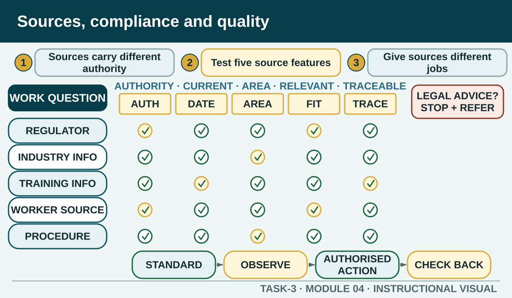

Prior learning
Recall the previous lesson and bring forward one question or completed learning artefact.
Task 3 · Lesson 4 of 6
Choose and test hospitality information sources, route compliance questions to the responsible authority and connect quality information to an authorised improvement.
Prior learning
Recall the previous lesson and bring forward one question or completed learning artefact.
Success criteria
Learning boundary
This lesson supports preparation and formative practice. The current authorised package and trainer/assessor control formal products, observations, dates and submission.
Useful sources can include government regulators, developers of codes or ethics, industry associations, accreditation operators, unions, training, journals, seminars, suppliers, colleagues, experienced industry personnel and personal observation. Each source type has a different purpose. A regulator may explain a law in plain English; a supplier may explain a product update; a workplace procedure controls the local method.
Start by asking who is responsible for this information. A source can be knowledgeable without having authority for every part of the question. Personal observation can identify a problem to investigate but cannot prove an industry-wide trend. A colleague can explain local experience but should not replace the current authorised document when an exact requirement matters.
Authority asks whether the publisher is responsible or qualified for the claim. Currency asks when the content and underlying evidence were updated. Jurisdiction asks where the information applies. Relevance asks whether it answers this role and decision. Traceability asks whether another person can find the source and see how the conclusion was reached.
A source does not pass or fail as a whole. It may be suitable for one claim and weak for another. An industry association may provide useful trend context but not determine a legal entitlement. An official national source may explain a broad framework but not a NSW procedure or a local venue action.
Triangulation is more than finding three pages that repeat the same sentence. Use sources with complementary roles. One might establish the official requirement or unit intent, another might provide current industry context, and a workplace or experienced-person source might explain how the information affects a duty.
When sources disagree, check whether they describe different jurisdictions, dates, business types or questions. Do not average incompatible claims. Record the difference and return to the source with responsibility. If the issue remains unresolved, the brief should name the uncertainty and recommend clarification.
Hospitality can involve food safety, work health and safety, employment conditions, equal opportunity, responsible service, gaming, local community protection, privacy and licensing. The exact obligations depend on the activity, role, organisation and jurisdiction. A classroom resource should teach students where and how to check, not declare what applies to an unknown business.
Use the regulator or official body responsible for the topic, read the current plain-English information and follow through to the authorised workplace procedure. If the question concerns a real dispute, entitlement, licence or legal interpretation, stop the classroom inference and use the appropriate official service or qualified advice.
Legal compliance and ethical practice overlap but are not identical. Ethical questions can concern honesty, respect, conflicts of interest, fair treatment, confidentiality, responsible claims and the effect of a decision on customers, colleagues, suppliers and the community. Codes of conduct or ethics can help workers recognise expected principles.
An ethical decision still needs workplace context and authority. A worker can describe the people affected, the competing responsibilities, the relevant code or value and a safe escalation step. They should not conceal a breach, publish private details or claim that personal opinion is the organisation's policy.
Hospitality quality assurance can draw on accreditation schemes, codes of conduct or ethics, industry association membership, occupational licensing where applicable and organisation-level systems such as standards, training, checklists, monitoring, feedback and corrective action. These mechanisms are not interchangeable and their applicability must be checked.
Quality information enhances work when it changes a skill, process, service or follow-up. A worker identifies the authorised standard, observes the result, records a gap, takes or recommends an action within authority and checks what happened next. The site must not invent the standard, threshold or corrective action for a local workplace.
Phone view: swipe across the diagram, or use Open larger below.

Formative practice
Each option explains the workplace consequence. These responses save on this device.
Written application
Evaluate the source for one exact claim. Do not copy long passages, give legal advice or treat an official national page as a local workplace procedure.
Apply and keep evidence
Compare authority, currency, relevance and evidence before using hospitality information at work.
Use the check result, activity record and written response as formative learning evidence only. Formal evidence remains controlled by the current package and trainer/assessor.
Authorised source note: The source types, plain-English regulator documents, compliance topics, ethical issues and quality-assurance categories reflect current unit knowledge evidence. The package teaches routing and application, not legal advice or universal local requirements. Source references: TAS-2026-2027, TEACHER-T3-RESOURCE, SITE-T3-V2, TGA-SITHIND006, TGA-SITHIND006-AR, GOV-NSW-FOOD-AUTHORITY, GOV-SAFEWORK-NSW, GOV-FAIRWORK-AWARDS, GOV-AHRC-WORKPLACE.